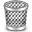

In questa sezione è possibile:
gestire le copie dei libri che hai prenotato da altri utenti
gestire le copie dei libri che hai messo in vendita
gestire le notifiche sui libri che cerchi
esportare ognuno degli elenchi visualizzati in diversi formati (PDF, LibreOffice, MS Excel, ecc,)
La tabella in alto rappresenta l'elenco delle copie dei libri che hai prenotato da altri utenti. Puoi rimuovere la prenotazione premendo il tasto 
La tabella intermedia contiene l'elenco delle copie dei libri che hai messo in vendita. Se hai completato la vendita ti preghiamo di indicarlo al sistema selezionando la copia e premendo il pulsante . Se invece non l'hai venduta ma vuoi comunque rimuoverla premi . In entrambi i casi la tua copia non sarà più visibile per gli altri utenti e non sarà quindi più prenotabile.
La tabella in basso rappresenta l'elenco dei libri che stai cercando e per i quali riceverai una notifica se un altro utente ne metterà in vendita una copia. Se un libro non ti interessa più selezionalo e premi il tasto .
Per esportare uno qualunque delle tabelle che stai visualizzando premi il tasto destro del mouse all'interno della tabella e scegli "Esporta". Seleziona il formato di esportazione che preferisci e premi OK.